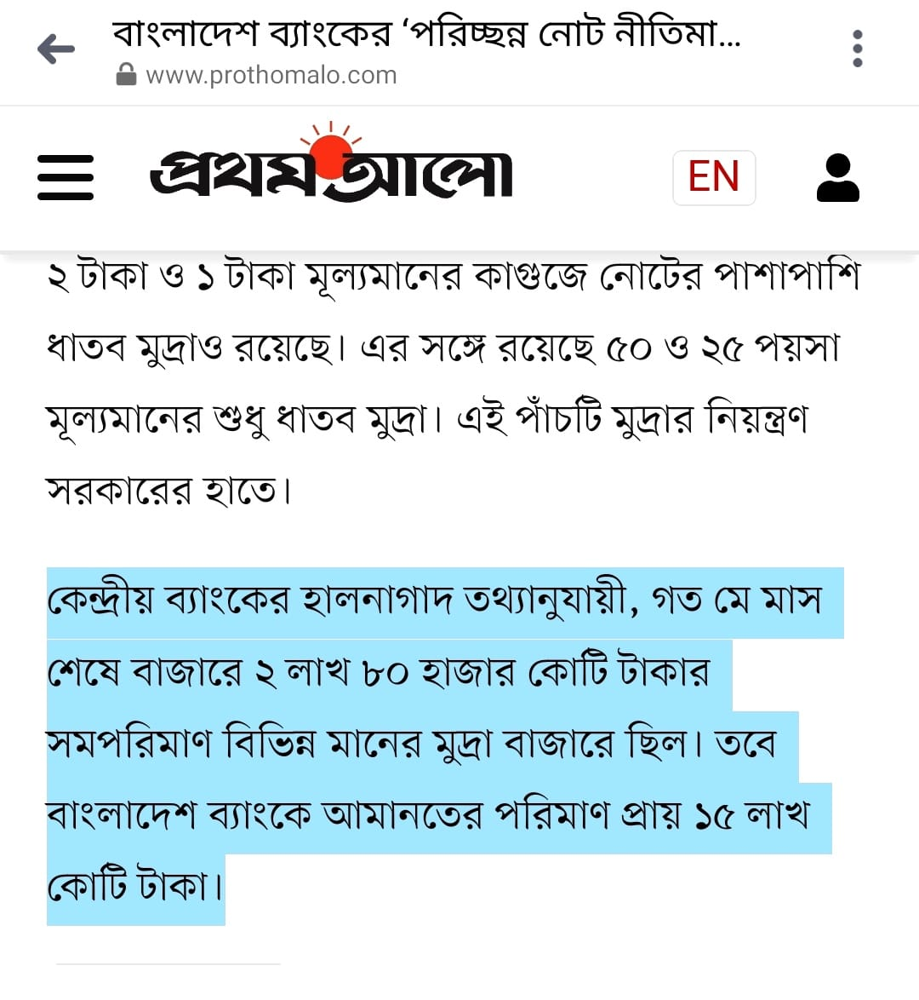

ছবি দেখে বুঝার চেষ্টা করুন। মোট টাকার বিপরীতে ঋনের পরিমাণ খেয়াল করুন।
*ফ্র্যাকশনাল রিজার্ভ ব্যাংকিং: এক কথায় ব্যাংক ডিপোজিট এর পুরোটা ক্যাশ রিজার্ভ না রেখে, একটা নির্দিষ্ট অংশ জমা রাখে, এই নির্দিষ্ট অংশকে স্ট্যাটিউটোরি লিকুইডিটি রিজার্ভ বলা হয়। এর হার কেন্দ্রীয় ব্যাংক ঠিক করে দেয়। বাংলাদেশে বর্তমানে এর হার ১৯.৫%। এই আর্টিকেলে আমি ১০% রিজার্ভ রিকার্মেন্ট ধরেছি, ক্যালকুলেশন এর সুবিধার জন্য।
*ফ্র্যাকশনাল রিজার্ভ ব্যাংকিং এর ইতিহাস।
ফ্র্যাকশনাল রিজার্ভ ব্যাংকিং এর ইতিহাসটা একটু সংক্ষেপে আলোচনা করা প্রয়োজন। স্বর্ণকার এর আবির্ভাবের পর, মানুষ স্বর্ণকার এর নিকট নিরাপত্তার (সেফ কিপিং) জন্য গোল্ড জমা রাখত। অতীতে গোল্ডই ছিল মানি। দৈনন্দিন যেটুকু গোল্ড প্রয়োজন শুধু তা উত্তোলন করত। সবর্ণের বিপরীতে গোল্ড স্মিথ (সবর্ণকার) মানুষকে একটা স্লিপ দিত, লিখা থাকত, ‘I owe You’, মানে আমি আপনার কাছে ঋণী। সবাই জানত এই স্লিপের বিপরীতে গোল্ড জমা আছে। মানুষজন স্বর্ণ বাদ দিয়ে দিন দিন এই স্লিপ দিয়েই ট্রানজেকশন শুরু করে দিল। স্বর্ণকার দেখলো দৈনিক স্বর্ণ উত্তোলন এর পরিমাণ খুবই কম। মোট রিজার্ভের/ডিপোজিটের একটা ক্ষুদ্রাংশ। মানুষ এই স্লিপ দিয়েই লেনদেন করছে। স্বর্ণকার এখন ইচ্ছা মতো স্লিপ ছাপাতে থাকে আর লোন দিতে শুরু করে। এই স্বর্ণকার এর পন্থাই এখন ফ্র্যাকশনাল রিজার্ভ ব্যাংকিং বলে পরিচিত। পার্থক্য হলো ফ্র্যাকশনাল রিজার্ভ ব্যাংকিং কে বর্তমানে বৈধতা দেয়া হয়েছে!
*ফ্র্যাকশনাল রিজার্ভ ব্যাংকিং; ব্যাংক কীভাবে টাকা তৈরী করে?
চলুন দেখা যাক, ব্যাংক কীভাবে কাজ করে। পূর্বের উদাহরণেই যাওয়া যাক। বুঝার সুবিধার্থে ধরে নেই পুরো দেশে একটিই ব্যাংক আছে কিংবা দেশের সব ব্যাংক একসাথে মার্জ করেছে।
এক ব্যাক্তি ব্যাংকে ১০০০ টাকা ডিপোজিট দিল। কেন্দ্রীয় ব্যাংক সেট করল, ব্যাংককে ডিপোজিটের ১০% ক্যাশ রিজার্ভ রাখতে হবে। এই ক্যাশ রিজার্ভ রাখা হয় দৈনন্দিন উত্তোলন এর জন্য। এখন ব্যাংকের ফাইনাইন্সিয়াল স্টেটমেন্ট এর দিকে তাকান। ক্যাশ রিজার্ভ আছে ১০০%। ১০০০ টাকা ডিপোজিট এর বিপরীতে ১০০০ টাকা ক্যাশ রিজার্ভ। যেহেতু ডিপোজিটের শুধুমাত্র ১০% ক্যাশ রিজার্ভ রাখা লাগবে, তাই ব্যাংক ডিপোজিট বৃদ্ধি করতে থাকবে যতক্ষণ না ক্যাশ রিজার্ভ ১০০০ ডিপোজিটের ১০% না হয়। এখন কীভাবে ব্যাংক ডিপোজিট বৃদ্ধি করবে? উত্তর: লোন এর মাধ্যমে! কেউ যখন লোন নিতে আসবে, তখন ব্যাংক লোন বৃদ্ধি করবে আর ডিপোজিটও সম পরিমাণ বৃদ্ধি করে দিবে। এই কাজটা ব্যাংক করে প্রতিবার লোন দেয়ার সময়।
ক্যাশ রিজার্ভ ১০০০, লোন দিল ৯০০০, এখন ১০০০০ ডিপোজিট এর ১০% ক্যাশ রিজার্ভ আছে ১০০০। এইভাবেই ব্যাংক তৈরী করলো ৯০০০ টাকা। এইভাবে ১০০০ টাকা ডিপোজিট নিয়ে ব্যাংক আরো ৯০০০ টাকা ডিপোজিট ক্রিয়েট করতে পারে, (১০০০/.১০)। লক্ষণীয় এই ৯০০০ টাকা ইকোনমিতে প্রবেশ করলো সম্পূর্ণ লোন হিসেবে যার ওপর সুদ চার্জ করা হবে। ধরলাম ডিপোজিট এর ওপর সুদ এর হার ৫% আর লোন এর ওপর ১০%। এই দুই সুদের ব্যবধানটাই ব্যাংকের প্রফিট।
৯০০০ টাকা লোন এর ওপর ১০% সুদ ৯০০ টাকা এবং ডিপোজিট ১০০০০ এর ওপর ৫% সুদ ৫০০ টাকা। ব্যাংকের প্রফিট (৯০০-৫০০) = ৪০০ টাকা। ব্যাংকের মুনাফা ৪০০ টাকা প্রকৃত ডিপোজিট ১০০০ এর ৪০%! এইবার ব্যাংকের ডেফিনেশন দেয়া যাক। ব্যাংক কি করে? ব্যাংক হাওয়া থেকে টাকা তৈরী করে মানুষকে লোন দেয় এবং এর ওপর সুদ চার্জ করে। ও হ্যাঁ! পাবলিকের ডিপোজিট জমা রাখে লিকুইডিটি মেইনটেইনেন্স এর জন্য!
অনেকেই এই ব্যাপারটা ধরতে পারেন না। কীভাবে ব্যাংক ১০০০ টাকার বিপরীতে ৯০০০ টাকা লোন দেয়! আমি লোন নিলে তো পুরো টাকা তুলে খরচ করব। ব্যাংক তো আমাকে প্রকৃত টাকাই দিতে হবে। ধরুণ, আপনি লোনের টাকা দিয়ে ১ কেজি কমলালেবু কিনেছেন। এখন আপনি যার কাছ থেকে কিনলেন, সেও তার টাকা ব্যাংকেই ডিপোজিট করবে। এইবার একটু বড় লেভেলে চিন্তা করুন। ১০০০ টাকা নয় ১০০০ কোটি টাকা। কেউ কি এই টাকা নিজের হাতে রাখবে? না। এই টাকা ব্যাংকে জমা দিবে, আর নিজের প্রয়োজনে উত্তোলন করবে প্রতিদিন কিছু অংশ। পুরো ইকোনমিতে এই অংশটা হলো ১০%, মোট ডিপোজিটের। এই টাকাই কেন্দ্রীয় ব্যাংক ছাপায় বা ইস্যু করে। ইকোনমিতে যেই টাকা একজনের হাত থেকে অন্যজনের হাতে লেনদেন হয়, আমরা দেখি, তা হলো ১০%। বাকী ৯০% টাকার, যা ব্যাংক তৈরী করে, আসলে কোন অস্তিত্বই নেই, এমনকি তা পেপার মানিও নয়। ব্যাংক যা তৈরী করে তা কম্পিউটারের এক্সেল শীটে কিছু একাউন্টিং রেকর্ড। কিন্তু এই একাউন্টিং রেকর্ডই মানুষ লোন নেয় এবং এর ওপর ইন্টারেস্ট দেয়!

Ismail Riyad
23.03.2024
টাকা কী !
টাকা (বা মুদ্রা) নামক জিনিসটার নিজস্ব কোন মূল্য নেই। পারিপার্শ্বিক পরিবেশের সাপেক্ষে এর মূল্যমান নির্ধারিত হয়। সোজা বাংলায়, কোন অঞ্চলের মানুষ যেটাকে মূল্যবান ভাববে সেটাই মূল্যবান এবং যেটাকে মূল্যহীন ধরে নেবে, সেটাই মূল্যহীন! সেকারণেই টাকা একই সাথে মহামূল্যবান, আবার সম্পূর্ণ মূল্যহীনও হতে পারে। বিষয়টি ব্যাখ্যা করা যাক । ধরুন, বিমান দুর্ঘটনায় আপনি এক দুর্গম আদিবাসী পল্লিতে গিয়ে পতিত হলেন। সে যাত্রায়, আপনি প্রাণে বেঁচে গেলেন এবং আপনার সাথে থাকা কিছু মালামাল ও টাকা পয়সাও অক্ষত রয়ে গেল। সুস্থ হয়ে খাবার কিনতে বাজারে গিয়ে দেখলেন, সবাই ছাগলের শিং দিয়ে লেনদেন করছে। কেউ ব্যাংক নোট ছুঁয়েও দেখছে না। তখন আপনি কী করবেন?
আপনার সাথের কিছু মালামাল বিক্রি করে অথবা কাজ খুঁজে শ্রমের বিনিময়ে কতক ছাগলের শিং অর্জন করে খাবার কিনবেন। তাই না? লক্ষ্য করুন, এমন একটি বিচ্ছিন্ন পল্লিতে আপনি সব কিছু বিক্রি করে ছাগলের শিং অর্জন করতে পারবেন। কারণ, সেই সমাজে আপনার টাকার কোন মূল্য নেই ৷ আবার, যখন আপনি যখন আদিবাসী পল্লি থেকে নিজ শহরে এক ব্যাগ ছাগলের শিং হাতে ফিরে আসবেন, কেউ তা ছুঁয়েও দেখবে না। কারণ শহুরে সমাজে ছাগলের শিং একেবারেই মূল্যহীন। পারিপার্শ্বিক অবস্থার পরিবর্তনের সাথে সাথে এভাবেই আপনার অর্থ মূল্যমান হারিয়ে ফেলে বা ফেরত পায়।
টাকার যে নিজস্ব কোন মূল্য নেই, তা গভীরভাবে বোঝার জন্য কল্পনা করুন আপনি এমনই একটি নির্জন দ্বীপে পতিত হলেন যেখানে জন মানবের কোনো চিহ্নই নেই । সেখানে আপনার টাকা-পয়সা কিংবা সোনার মোহর কী কাজে আসবে? কোনো কাজেই আসবে না। কারণ এগুলোর নিজস্ব কোনো ব্যবহারিক উপযোগিতা নেই। আর যেই বস্তুর কোনো ব্যবহারিক উপযোগিতা নেই, তার নিখাদ কোনো মূল্যও নেই।
প্রকৃতপক্ষে নানাবিধ অপ্রয়োজনীয় বস্তু দ্বারা মুদ্রা তৈরি হতে পারে। প্রাচীন বাংলায় বিনিময়ের মাধ্যম 'কড়ির মুদ্রা' এর প্রচলন ছিল। দক্ষিণ প্রশান্ত মহাসাগরীয় দ্বীপ অঞ্চলে পাখির পালককে মুদ্রা হিসেবে ব্যবহার করা হতো। এছাড়া সোনা, রূপা ইত্যাদি ধাতব মুদ্রার বিস্তীর্ণ ব্যবহার ছিল ইতিহাস জুড়ে । কড়ি বা পাখির পালকের মতো সোনা এবং রূপাও এক অর্থে 'প্রায়' অপ্রয়োজনীয় বস্তু। বাস্তবতার নিরিখে বিচার করলে, কিছু শিল্প- কারখানা ছাড়া আমরা সোনা ও রূপাকে কেবল অলঙ্কার হিসেবেই ব্যবহার করে থাকি । আমরা ওগুলোকে মূল্য না দিতে মনঃস্থ করলে, সোনার বা রূপার টুকরাও হয়তো ধূলিকণার মতো রাস্তার ধারে পড়ে থাকত। কারণ সোনা বা রূপা এমন কিছু না, যা ছাড়া আমরা চলতে পারি না। সেই তুলনায় খাবার, পানি, লবণ, লোহা, তামা, বিদ্যুৎ ইত্যাদি আমাদের জন্য প্রয়োজনীয় বস্তু । এগুলো ছাড়া হয় আমরা একেবারেই চলতে পারি না অথবা আমাদের চলাটা অত্যন্ত মুশকিল হয়ে পড়ে।
তাহলে মুদ্রার মূল্যমান আসে কোথা থেকে?
মুদ্রার মূল্যমান নির্ভর করে মুদ্রার মোট পরিমাণ এবং গতির উপর (অর্থাৎ, একটি অর্থনীতিতে কত দ্রুত টাকা হাত বদল করছে তার উপর)। সাধারণত টাকার গতি বিশেষ পরিবর্তিত হয় না। এজন্য আমরা বলতে পারি, টাকার পরিমাণ যত দ্রুত বৃদ্ধি পায়, মূল্যস্ফীতিও সেই সাথে সমানতালে বৃদ্ধি পায়।
বিষয়টি সহজভাবে বোঝা যায় এভাবে, মনে করেন কোন এক বছর টমেটোর বাম্পার ফলন হয়েছে। বাজারে অনেক বেশি টমেটো থাকায়, স্বভাবতই এর দাম পড়ে যাবে । ঠিক তেমনি, কোন কারণে যদি সাগর থেকে অনেক বেশি কড়ি ভেসে আসে, কড়ির দামও কমে যাবে। সোনার খনি আবিষ্কার হলে, সোনার দাম কমে যাবে। একইভাবে, টাকার পরিমাণ বৃদ্ধি গেলেও সব কিছুর দাম বেড়ে যাবে বা টাকার দাম কমে যাবে।
মুদ্রার মূল্যমানের রহস্য বোঝা গেলে এবার আলোচনা করা যাক মুদ্রার বৈশিষ্ট্য নিয়ে।
মুদ্রা হিসেবে আমরা যা কিছুই ব্যবহার করি না কেন, তাদের কিছু সাধারণ বৈশিষ্ট্য আছে। মুদ্রার একটা বিশেষ দিক হলো, এর পরিমাণ ও সরবরাহ সীমিত। গাছের পাতা, কিংবা সমুদ্রের ধূলিকণার মতো বিপুল জোগানের কোনো বস্তুকে আমরা মুদ্রা হিসেবে ব্যবহার করতে পারি না। এমনটি করলে হয়তো বা আমাদেরকে এক বস্তা টাকার বিনিময়ে এক সের চাল কিনতে হতো। সেক্ষেত্রে, মুদ্রা তার বহনযোগ্যতার গুণটা হারিয়ে ফেলত।
মুদ্রার আরেকটি চরিত্র হলো, একে সঞ্চয় করে রাখা যায়। পচনশীল দ্রব্যাদি যেমন গাছের পাকা ফল বা সমুদ্রের তাজা মাছ মুদ্রা হিসেবে ব্যবহারের অনুপযোগী। এগুলো মুদ্রা হলে, আয় করার দুই একদিনের মধ্যেই সব ব্যয় করে ফেলতে হতো। সিন্দুকে যত্ন করে সঞ্চয় করে রাখা যেত না। সুতরাং সহজে নষ্ট হয় না, এমন উপকরণকেই 'মুদ্রা' হিসেবে আমরা বাছাই করব।
এসবের পাশাপাশি মুদ্রাকে হতে হবে সহজে বিভাজনযোগ্য, অর্থাৎ চাইলেই যেন একে ছোট-বড় বিভিন্ন অংশে আয়েশে ভাগ করে ফেলা যায়। খাদ্যশস্য বা লবণ বিভাজনযোগ্য বিধায় এদেরকে মুদ্রা হিসেবে ব্যবহার করা যায় । আমরা চাইলেই এক ছটাক, আধ ছটাক বা পৌনে এক সের লবণ বিনিময় করতে পারি, অর্থাৎ নিজের প্রয়োজনমাফিক কম-বেশি করতে পারি । এটি হচ্ছে মুদ্রার বিভাজনযোগ্যতা। কোন প্রাণী বা গাড়ি বিভাজনযোগ্য নয় বলেই, আমরা এদেরকে মুদ্রা হিসেবে ব্যবহার করতে পারি না। যেমন একটি প্রাণীকে দুই ভাগ করলে, সে মারা যাবে। আবার একটি গাড়িকে তিন টুকরা করলে, গাড়িটিও অকেজো হয়ে যাবে। অর্থাৎ, বিভাজন করলে যেই বস্তু তার গুণগত মান হারিয়ে ফেলে, সেই বস্তু মুদ্রা হতে পারে না।
মুদ্রার আরেকটি লক্ষণ হচ্ছে বহনযোগ্যতা। অতিরিক্ত ভারি বলেই সীসাকে আমরা কোনদিন মুদ্রা হিসেবে ব্যবহার করিনি।
সবশেষে, মুদ্রাকে হতে হবে সমতুল্য। দুইটি একই মূল্যমানের মুদ্রা গুণে, মানে, আকৃতিতে এবং প্রকৃতিতে একই রকম হবে। যেমন— দুটি ১ আনার মোহর সব বিবেচনাতেই সাদৃশ্যপূর্ণ। আবার এক কেজি বিন্নি ধান স্থানভেদে অভিন্ন গুণসম্পন্ন । দুটি সমমানের মুদ্রা অনুরূপ না হলে, লেনদেনে সমঝোতা অসম্ভব । উদাহরণস্বরূপ, দুটি গরু বা দুইটি কাঁঠাল কখনও সম্পূর্ণ একরকম হয় না। তাই এগুলো দিয়ে লেনদেন করতে গেলে, ক্রেতা এবং বিক্রেতা সমঝোতায় পৌঁছাতে পারে না। একারণে, এগুলো মুদ্রা হিসেবে অচল।
মুদ্রার পরিমাণ সীমিত হলেও এর একটি গুণ হচ্ছে, একে পরিমাণে বৃদ্ধি করা যায়। যেমন স্বর্ণ বা রৌপ্যের খনি আবিষ্কার করার সাথে সাথে ধাতব মুদ্রার পরিমাণ বৃদ্ধি পায়। আবার মুদ্রা হিসেবে কড়ি ব্যবহার করলে, প্রতি বছরই সাগরের তীর হতে কুড়িয়ে কুড়িয়ে আমরা সেগুলোর পরিমাণ যৌক্তিকভাবে বৃদ্ধি করতে পারি।
নতুন মুদ্রা আসার পরেও অর্থনীতির আকৃতি পূর্ববৎ থাকলে, মুদ্রার মূল্যমান আগের তুলনায় কমে যাবে বা মূল্যস্ফীতি দেখা দিবে। আবার, অর্থনীতির আকৃতি আগের মতো থাকলে কিন্তু মুদ্রার পরিমাণ কমলে, মূল্যহ্রাস দেখা দিবে।
**টিকা—টাকা।
সময় এবং পরিবেশের পরিপ্রেক্ষিতে টাকা কিভাবে মূল্যমান হারাতে পারে তার একটি চমৎকার উদাহরণ হচ্ছে, প্রথম বিশ্বযুদ্ধের কয়েকবছর পরের জার্মানি । সেই সময় জার্মানরা ময়লা আবর্জনার মতো টাকা ছুঁড়ে ফেলে দিতে শুরু করে । এমনকি ঝাড়ুদারকে রাস্তা থেকে ঝাড়ু দিয়ে মার্ক (জার্মান মুদ্রা) কুড়িয়ে ডাস্টবিনে ফেলতে দেখা যায় ।
এর কারণ বিশ্বযুদ্ধের পর যুদ্ধের ঋণ ও জরিমানা প্রদান করতে গিয়ে, জার্মানিকে বিপুল পরিমাণ মুদ্রা (জার্মান মার্ক) ছাপাতে হয় । এতে এক সময় মার্কের মূল্য এতই কমে যায় যে, এক বান্ডেল পুরানো নোটের তুলনায় এক বান্ডেল টয়লেট পেপার বেশি মূল্যবান হয়ে উঠে । তাই মানুষ কষ্ট করে বাজার থেকে টয়লেট পেপার না কিনে, পুরানো নোট দিয়েই শৌচ কাজ সেরে ফেলত। কেউ আবার বিরক্ত হয়ে এই মূল্যহীন নোট জঞ্জাল গণ্য করে ফেলে দিতে শুরু করল। তাই রাস্তাতে আবর্জনার স্তূপের মতো পড়ে থাকতে দেখা যায় এবং ঝাড়ু দিয়ে তা পরিষ্কার করে নিতে হয়। এভাবেই এক কালের মূল্যবান মার্ক সময়ের ব্যবধানে হয়ে যায় মূল্যহীন।
বইঃ ব্যাংকব্যবস্থা ও টাকার গোপন রহস্য।
Ismail Riyad
23.03.2024
ক্রমবর্ধমান মুদ্রা ও চক্রবৃদ্ধি সুদ।
মুদ্রা কী, তা আপনারা বেশ চমৎকার বুঝলেন । এবারে মূল আলোচনা শুরু করার আগে, একটি বিষয় খেয়াল করেন— আমরা আমাদের কাঠামোটাতে চিন্তার নতুন আরেকটি মাত্রা যুক্ত করেছি । প্রথম অধ্যায়ে জনসংখ্যা ছিল স্থির, অর্থনীতি ছিল স্থবির এবং মুদ্রার সংখ্যা ছিল সীমিত। দ্বিতীয় অধ্যায়ে, আমরা প্রথম দুইটি শর্ত তুলে দিয়েছিলাম। তবে এখন পর্যন্ত মুদ্রার পরিমাণ ছিল স্থির । এবার আমরা সেই নির্ধারকটাও তুলে দিচ্ছি, অর্থাৎ, মুদ্রার সংখ্যা হবে পরিবর্তনশীল। এই ক্রমবর্ধমান মুদ্রাব্যবস্থায় সুদের প্রভাব এবং এর দীর্ঘমেয়াদি ফলাফল কেমন হতে পারে, সেটা বুঝে নিতে চলুন রূপসাগরের তীরে আমাদের তরী ভিড়াই।
এখন থেকে, রূপসাগরের মুদ্রা হচ্ছে কড়ি। বর্তমানে, সাকুল্যে দেশটিতে ৫,০০০টি কড়ি আছে। কিন্তু মজার ব্যাপার হচ্ছে, ফি বছর সাগর থেকে ১০০টি নতুন কড়ি ভেসে আসে এবং যে যার সময় সুযোগ মতো সৈকত থেকে কড়িগুলো সংগ্রহ করে আনে । বাৎসরিক আয় রোজকারের পাশাপাশি সাগর পাড়ে কুড়িয়ে পাওয়া কড়িও অধিবাসীদের জীবনে খণ্ডকালীন আয়ের মতো কল্যাণ বয়ে আনে।
এমন একটি অর্থনীতিতে, এখন পর্যন্ত করা বিশ্লেষণগুলো কতটা কার্যকর? এখন কি সুদ এবং মুদ্রাব্যবস্থা সাম্যাবস্থা বজায় রেখে হাতে হাত ধরে আগাতে পারবে?
মনে করি, রিবার ছেলে রাজা রূপসাগরে সুদের সেই গদির মালিক । প্রতি বছর রাজা ১,০০০টি কড়ি ঋণ দেয় এবং এই ঋণের বিপরীতে ১০ শতাংশ হারে মোট ১০০টি কড়ি সুদ নেয় । এখন যেহেতু সাগর থেকে বছরে ১০০টি নতুন কড়ি ভেসে আসছে, সব সুদ সিন্দুকে জমা করলে মুদ্রাব্যবস্থায় কোন সংকট সৃষ্টি হবে না। তবে শর্ত হচ্ছে, মোট ঋণের পরিমাণ সর্বোচ্চ ১,০০০টি কড়িতে স্থির রাখতে হবে, বাড়ানো যাবে না। এমনটি করতে পারলে প্রতি বছর রাজার ভাণ্ডারে জমা হওয়া কড়ির সংখ্যা এবং নতুন ভেসে আসা কড়ির সংখ্যা সমান সমান থাকবে । একারণে, বাজারে মোট ৫,০০০টি কড়ি সর্ব্দা চলমান থাকবে এবং সুদ থাকা সত্ত্বেও মুদ্রার ভারসাম্য বজায় থাকবে।
কিন্তু এই ভারসাম্য বাস্তবসম্মত নয়। এই পদ্ধতিতে সিন্দুকে কড়ির সংখ্যা কেবল বাড়তেই থাকবে এবং রাজার ঘরে অলস কড়ির পাহাড় তৈরি হবে। কোন 'বুদ্ধিমান' ব্যক্তিই অলস কড়ির পাহাড় চির অবহেলায় ফেলে রাখতে পারে না। আর সুদ ব্যবসায়ীর জন্য তো তা অকল্পনীয়। এক্ষেত্রে বরং, তিনটি ঘটনা ঘটতে পারে।
১. কড়িগুলো পুনরায় ঋণ হিসেবে দিয়ে দেওয়া যেতে পারে।
২. অন্য কোনো ব্যবসাতে বিনিয়োগ করা যেতে পারে।
৩. ব্যক্তিগত প্রয়োজনে খরচ করে ফেলা যেতে পারে।
আমরা প্রতিটি প্রেক্ষাপটের চিত্রই আলাদা আলাদা বিশ্লেষণ করব। তারপর মিশ্র কৌশলের সম্ভাবনা যাচাই করে দেখবো।
১. পুনরায় ঋণ দিলে কী হত?
সুদের হার দশ শতাংশ হলে, ১,০০০টি কড়ি ঋণের বিপরীতে প্রতি বছর সুদ আসতো ১০০টি কড়ি। তাহলে প্রথম বছর শেষে সুদাসল (রাজার পুঁজি ) দাঁড়াতো ১,১০০টি কড়িতে। দ্বিতীয় বছরের প্রারম্ভে রাজা ঋণ দিতে পারতো ১,১০০টি কড়ি, যার বিপরীতে সুদ আসতো ১১০টি কড়ি ।
লক্ষ্য করুন, বছরে ১০০টি কড়ি সাগর থেকে ভেসে আসলে যে সাম্যাবস্থা বজায় থাকত, তা দ্বিতীয় বছরেই ভেঙে যাচ্ছে। সাম্যাবস্থা বলতে বুঝানো হয়েছে, মহাজন সুদ হিসেবে যা নিয়ে নিচ্ছে, তার সমান বা অধিক পরিমাণ কড়ি প্রতি বছর সাগর থেকে ভেসে আসছে। কারণ ভেসে আসা কড়ির সংখ্যা যদি কম হয়, সব মুদ্রাই সুদ কারবারির পেটে চলে যাবে । এবার দেখুন, দ্বিতীয় বছর শেষে, সুদাসল হবে ১,২১০টি কড়ি যার উপর ১০ শতাংশ হারে মোট সুদ আসবে ১২১টি কড়ি। এভাবে তৃতীয় বছর শেষে, সুদাসল হবে ১,৩৩১টি কড়ি।
—-----------------------------------------------------------------------
|বছর | ঋণ | সুদের হার ১০ % অনুযায়ী | সুদ+আসল |
| | | প্রাপ্ত সুদের পরিমাণ | |
|---------+---------+-------------------------------------+------------|
| 1 | 1000 | 100 | 1100 |
| 2 | 1100 | 110 | 1210 |
| 3 | 1210 | 121 | 1331 |
| 4 | 1331 | 133.1 | 1464.1 |
| 5 | 1464.1 | 146.41 | 1610.5 |
| 6 | 1610.5 | 161.05 | 1771.5 |
| 7 | 1771.5 | 177.15 | 1948.6 |
| 8 | 1948.6 | 194.86 | 2143.4 |
| 9 | 2143.4 | 214.34 | 2357.7 |
| 10 | 2357.7 | 235.77 | 2593.4 |
| 11 | 2593.4 | 259.34 | 2852.7 |
| 12 | 2852.7 | 285.27 | 3138 |
| 13 | 3138 | 313.8 | 3451.8 |
—-----------------------------------------------------------------------
ছকে দেখুন, প্রতি বছর সাগর থেকে ২০০টি কড়ি ভেসে আসলে, ৯ম বছরে সাম্যাবস্থা ভেঙে যাচ্ছে । আবার প্রতি বছর সাগর থেকে ৩০০টি কড়ি ভেসে আসলেও, ১৩ তম বছরেই সাম্যাবস্থা ভেঙে যাচ্ছে।
উপরের ছকে, কেবলমাত্র প্রথম তেরো বছরের হিসাব দেখানো হয়েছে । ছকটি আরো বড় করলে দেখা যাবে ভেসে আসা কড়ির সংখ্যা ৪০০, ৭০০ বা ১২০০ যত বেশিই হোক না কেন, সুদের চক্র চলতে থাকলে এক সময় সব কড়িই সুদি মহাজনের হাতে চলে যাবে । এমনকি সুদের হার মাত্র ৫ শতাংশ বা ২ শতাংশ হলেও ঠিক একই ফলাফল সংগঠিত হবে, কেবল মাত্র কিছু বেশি সময় লাগবে । এটিই হলো চক্রাকারে বৃদ্ধির মায়াজাল, যা প্রকৃতির সকল স্থানে দেখা যায় ।
অনেকে মনে করে থাকতে পারেন, চক্রবৃদ্ধিতে সুদ না নিলেই, সুদের ক্ষতিকর প্রভাব থেকে রেহাই পাওয়া সম্ভব । আবার কেউ কেউ মনে করেন যে, ঋণ পরিশোধে অপারগ ব্যক্তিকে সময় বাড়িয়ে দিলে বা বিশেষ প্রয়োজনে সুদ মওকুফ করে দিলে, সুদ সমাজের কোনো ক্ষতি করবে না। এই ধারণাগুলো ভয়ানক ভুল।
রূপসাগরের মহাজন রাজা মিয়া কিছু গ্রাহকের সুদ ক্ষমা করে দিলে অথবা ঋণ পরিশোধে ব্যর্থ গ্রাহকদের কিছু বাড়তি সময় দিলেও, সব মুদ্রা তার মালিকানাতেই কেন্দ্রীভূত হবে । কেবল পূর্বের তুলনায় কিছুটা বেশি সময় লাগবে।
রূপসাগরের নতুন প্রজন্মের জনৈক মধুর সওদাগর বাদশা মিয়া । দ্বীপের দক্ষিণের উত্তাল সাগরপাড়ে অবস্থিত কেওড়া বনের মৌয়ালদের থেকে তিনি মধু কিনে আনেন । বাদশা মিয়া মৌয়ালদের থেকে যেই দামে মধু কিনেন, বাজারে তা ২০ শতাংশ লাভে বিক্রি করেন । প্রথমে ১০০ কড়ি পুঁজি নিয়ে বাদশা মিয়া ব্যবসা শুরু করলেন। প্রথমবার তিনি ১০০ কড়ি মূল্যের মধু কিনে সেই মধু ১২০ কড়িতে বিক্রি করলেন। তারপর বাদশা মিয়া ১২০ কড়ির মধু কিনে বাজারে বিক্রি করলেন ১৪৪ কড়িতে । তারপর, ১৪৪ কড়ির মধু কিনে বিক্রি করলেন ১৭৩ কড়িতে, তার পরবর্তীতে ১৭৩ কড়ির মধু কিনে ২০৭ কড়িতে বিক্রয় করলেন । অথচ সরল লাভে ১০০, ১২০, ১৪০, ১৬০, ১৮০, ২০০ কড়ি এভাবে আগানোর কথা ছিল। তাহলে এমন হলো কেন ?
এমন হবার কারণ হচ্ছে প্রতিবার তিনি অধিক পরিমাণ অর্থ বিনিয়োগ করেছেন যা মোট সম্পদকে চক্রাকারে বৃদ্ধি করে দিয়েছে। প্রকৃতির সকল স্থানেই এমনটি দেখা যায়। যেমন— জনসংখ্যা বৃদ্ধি, তেজস্ক্রিয়তা, অর্থনৈতিক প্রবৃদ্ধি ইত্যাদি । সুদও তার ব্যতিক্রম নয় । সুদের হার যত সরলই দেখাক না কেন, ঋণের পরিমাণ চক্রাকারে বৃদ্ধি পায় এবং ঋণের হাত ধরে সুদও চক্রাকারে বৃদ্ধি পেতে থাকে (চার্টে দেখুন)।
Ismail Riyad
23.03.2024
দুর্জনের ছল
ভারতবর্ষের দোর্দণ্ড প্রতাপশালী শাসক সম্রাট আকবর। সে বছর আচানক এক ভয়ঙ্কর বন্যায় রাজ্যের বিস্তীর্ণ এলাকার ধান বিনষ্ট হয়ে যায় । কীভাবে রাজকার্য চালাবেন, কোথা থেকে এত বড় সেনাবাহিনীর বেতন-ভাতা দিবেন, তা নিয়ে সম্রাট গভীর দুশ্চিন্তায় পড়ে গেলেন। উপায়ান্তর না পেয়ে তিনি ধনকুবের সভাসদ মানসিংহের নিকট ১০,০০০টি স্বর্ণমুদ্রা সহায়তা চেয়ে চিঠি পাঠালেন। সম্রাটের চিঠি মানসিংহকে বেজায় তুষ্ট করল। যথারীতি বিনয়াবনত হয়ে চিঠির ফিরতি জবাবে তিনি লিখলেন,
"মহামান্য সম্রাট, আমার প্রণাম নিবেন । আপনি বিপদে আছেন জেনে অতিশয় ব্যথিত হলাম । আমি আজই ১০ হাজারটি মোহর আপনার নিকট পাঠিয়ে দিচ্ছি। আপনি আপনার সময় সুযোগ মতো সামর্থ সাপেক্ষে এই ঋণ পরিশোধ করে দিলেই হবে। সাধারণত, আমি সবার থেকে ১৪ শতাংশ সুদ রাখি। তবে, আপনি আমার বিশ্বস্তজন বিধায় প্রতি বছর মোট ঋণের উপর সুদ রাখছি মাত্র ১২ শতাংশ করে । আপনার এই বিপদের দিনে সাহায্য করতে পেরে আমি আজ নিজেকে বড়ই ধন্য মনে করছি ।
বিপদের দিনে মানসিংহের সাহায্য সম্রাটকে বড় পরিতৃপ্ত করল। সেই বিপর্যয় পেরিয়ে পরের বছরগুলোতে ধীরে ধীরে দেশের অবস্থার উন্নতি হলো । রাজ-কোষাগার আবারো ধনে রত্নে সমৃদ্ধ হয়ে উঠলো। তাই ঋণ নেওয়ার পাঁচ বছরের মধ্যেই সুদাসল পুরোটাই পরিশোধ করার মতো অবস্থা ফিরে আসলো। একদিন সম্রাট তার প্রধানমন্ত্রী বীরবলকে ডেকে পাঠালেন। দরবারে হাজির হলে বীরবলকে তিনি বললেন, 'বীরবল সাহেব, পাঁচ বছর আগে মানসিংহের থেকে দশ হাজার মোহর ঋণ নিয়েছিলাম। ১২ শতাংশ সুদে ৫ বছরে সুদ আসে ছয় হাজার মোহর । আপনি রাজ কোষাগার থেকে মানসিংহকে ১৬,০০০টি মোহর পরিশোধ করে দিন ।
বীরবল হিসেব করে বলল, 'সম্রাট, আপনার হিসাবে একটু সমস্যা আছে । এটি তো চক্রবৃদ্ধি সুদ । এই যে দেখুন চিঠিতে লেখা প্রতি বছর মোট ঋণের উপর ১২ শতাংশ করে সুদ দিতে হবে। ঋণ নেবার পরে তো আপনি কোন সুদ পরিশোধ করেননি। যেহেতু অপরিশোধিত সুদ দেনার সমতুল্য, আপনার মোট দেনা চক্রাকারে বৃদ্ধি পেয়েছে এবং সমস্ত দেনার উপর সুদ যুক্ত হয়েছে। বর্তমানে আপনার দায় হচ্ছে সাড়ে সতেরো হাজার মোহর যা সরল অংকে শতকরা ১৫ শতাংশ সুদের সমান । অর্থাৎ, এই পাঁচ বছরে শতকরা ১৫ শতাংশ সরল সুদে যেই দায় আসতো চক্রবৃদ্ধি হারে শতকরা ১২ শতাংশ সুদে তার সমপরিমাণ দায় আসছে।'
এবার মানসিংহের পুত্র দুর্জন সিংয়ের পালা। সে ছিলো তীক্ষ্ন বুদ্ধিমান। ছোট বেলা থেকেই তার স্বপ্ন ছিলো একদিন সে সমগ্র ভারতের রাজা হবে । মাত্র পনেরো বছর বয়সে দুর্জন সিং তার বাবার ব্যবসার দায়ভার গ্রহণ করল এবং ঠিক একই সময়ে সম্রাট আকবরের মৃত্যুর পরে সম্রাট নিজাম দিল্লির রাজ সিংহাসনে বসলো । নতুন সম্রাট নিজামের ক্ষমতায় বসার টালমাটাল সময়কে সুযোগ বিবেচনায় পাঠানরা ভারতে আক্রমণ করে বসলো । যুদ্ধের ব্যয়ভার বহন করতে সম্রাট হিমশিম খাচ্ছেন এবং রাজ কোষাগার শূন্য হয়ে যাচ্ছে দেখে দুর্জন সিং বন্ধুবেশে সম্রাটের দরবারে হাজির । সুমিষ্ট কণ্ঠে দুর্জন সিং বলল, ‘আপনার বাবার বিপদের দিনে আমার বাবা যে সাহায্য করেছিলেন, তা তো আপনি জানেন। এবারের এই বিপদের দিনেও আমি আপনার পাশে আছি।' দুর্জন সিংকে পাশে পেয়ে সম্রাট নিজাম খুব খুশি হলেন । এবারে দুর্জন সিং বলল, 'আমিও আমার বাবার মতন আপনাকে ২০ হাজার মোহর ঋণ দিচ্ছি । সুদের হার চক্রবৃদ্ধিতে ১২ শতাংশ । আপনার এই ঋণ এখন পরিশোধ করার প্রয়োজন নেই । আপনার পুত্রের ক্ষমতা গ্রহণের দিনে তার থেকে আমি আমার পাওনা বুঝে নিয়ে নিব । নিজাম ভাবলো এই তো সুবর্ণ সুযোগ । যুদ্ধের সময় ঋণ পাওয়াই সৌভাগ্যের ব্যপার। তার উপর এই ঋণ জীবনকালে শোধ না করলেও চলবে । মন্দ কী?
সেবার সম্রাট যুদ্ধে জিতলেন এবং যার ঋণের কল্যাণে এই জয় সম্ভব হয়েছে তাকে শ্রদ্ধাভরে স্মরণে রাখলেন। দুর্জন সিং তাৎক্ষণিকভাবে তার ঋণের টাকা সম্রাটের থেকে ফেরত নিল না। তবে চুক্তি মোতাবেক সম্রাটের পুত্রের থেকে নিবেন বলে জানান। পঞ্চাশ বছর দাপটের সাথে রাজত্ব করে সম্রাট নিজাম একসময় মৃত্যুবরণ করেন। স্বাভাবিকভাবেই, তার পুত্র শাহ্ সুলতান দিল্লির সিংহাসনের উত্তরাধিকারী হলেন। শাহ্ সুলতানের অভিষেক অনুষ্ঠানের দিন সবার সাথে নিমন্ত্রিত ছিল দুর্জন সিংও। যুবরাজকে মুকুট পরানো হবে ঠিক সেই মুহূর্তে দুর্জন সিং বলে উঠলো, ' রাজকুমার শাহ্ সুলতান, ভারতবর্ষ তো আমার।' সবাই হতভম্ব হয়ে তাকিয়ে রইল । দুর্জন সিং এগুলো কি বলছে! সবার অপলক দৃষ্টির সামনে কাগজ বের করে দুর্জন সিং দেখাল 'এই যে দেখুন, সম্রাট নিজাম আমার থেকে ৫০ বছর আগে ১২ শতাংশ সুদে ২০,০০০টি মুদ্রা ঋণ নিয়েছিলেন । আজকের সভায় তো জ্ঞানী-গুণী অনেক ব্যক্তিই এসেছেন । একটু হিসাব করে বলেন দেখি সম্রাটের বর্তমান দায় কত ?
' রাজমনীষী সব কিছু শুনে কাগজ কলম নিয়ে হিসেব করতে বসে পড়লেন । কিছুক্ষণ হিসেব করে সব কিছু কেটে দিয়ে তিনি আবারো গোড়া থেকে নতুন করে শুরু করলেন। কি যেন একটা সমস্যা হচ্ছে। কয়েক বার গণনা করেও যখন দেখলেন বার বারই বিপুল অঙ্কের একটা মানই আসছে, কম্পিতস্বরে তিনি সবার সামনে ঘোষণা দিলেন, 'সম্রাটের বর্তমান দায় ৫৭ লক্ষ ৮০ হাজার ৪৩টি স্বর্ণমুদ্রা। ৫০ বছরে ১২ শতাংশ চক্রবৃদ্ধি সুদ প্রতি বছর ৫৭৬ শতাংশ সরল সুদের সমান। রাজকোষে এর সিকিভাগ মুদ্রাও নেই । প্রচলিত আইন অনুযায়ী ঋণ অনাদায়ে রাজ্যের মালিকানা দুর্জন সিংয়ের হাতে হস্তান্তরিত হবে। সেই মোতাবেক দুর্জন সিং আজকের সভায় রাজ মুকুট পরানো হোক।'
` Compound interest is the eighth wonder of the world. He who understands it, earns it ... he who doesn't.... pays it.'
-Albert Einstein
চক্রবৃদ্ধি সুদ পৃথিবীর ৮ম আশ্চর্য। আক্কেলমন্তরা এটা আয় করে, আর অগাচণ্ডীরা এটা ব্যয় করে।
-আলবার্ট আইনস্টাইন
আইনস্টাইনের দৃষ্টিতে পৃথিবীর অষ্টম আশ্চর্য বস্তু যে সাধারণ মানুষের ‘আকল'-এর পরিসীমার বাইরে থাকবে, এটাই স্বাভাবিক! তবে একবার জানা-বোঝার পরেও আমাদের ‘আকল' যেন 'বিকল' না হয়, সেই প্রত্যাশাই রইল!
এই ব্যাপারে কলোরাডো বিশ্ববিদ্যালয়ের অ্যামেরিটাস অধ্যাপক ও বিখ্যাত পদার্থবিদ আলবার্ট এ. বার্টলেট বলেছিলেন :
"The greatest shortcoming of the human race is our inability to understand the exponential function."
-Albert Allen Bartlett '
এক্সপোনেনশিয়াল ফাংশন (ক্রমবর্ধমান ধারা) বুঝতে না পারাটা মানবজাতির প্রকাণ্ড দুর্বলতা।
-আলবার্ট এ. বার্টলেট
গণিত নিয়ে জীবন কাটানো মনীষীদের এই উপলব্ধির গভীরতা ব্যাপক এবং দুঃখজনক সত্য এই যে চক্রবৃদ্ধি সুদের খেলাই ব্যাংকগুলো আমাদের সাথে খেলছে।
চিন্তার খোরাক
ধরি, জাপান সম্রাট কোতোহিতো ১৬১২ সালে তৎকালীন বাংলার সুবাদার ইসলাম খান চিশতিকে ঢাকার উন্নয়নের জন্য মাত্র ১ শতাংশ সুদে ১ কোটি ইয়েন ঋণ দিলেন । শর্ত হল :
১. সুবাদার ও পরবর্তী সব শাসক শুধু সুদ পরিশোধ করতে থাকবেন ।
২. সুদ ও আসলের পরিমাণ প্রতি বছর ঢাকার ‘মূল্যস্ফীতি' অনুপাতে সমন্বয় হবে।
তাহলে, বর্তমানে জাপান কত টাকা সুদ পেত আর মূল কত টাকা ঋণ জাপানের পাওনা থাকত?
১০০ বছরে ১২ শতাংশ চক্রবৃদ্ধি সুদ বছরে কত শতাংশ সরল সুদের সমান?
আপনার দেশে ব্যাংকব্যবস্থার সুদের হার কত?
বর্তমানে প্রতিটা ব্যাংকের হাতে দশ হাজার কোটি করে টাকা থাকলে, চলমান সুদের হারে ১০০ বছর পরে ব্যাংকের হাতে কত টাকা থাকবে?
Ismail Riyad
19.03.2024
তাদের হেদায়েত অথবা, লাঞ্চিত ভগ্নদশায় দেখাতে পাওয়াটা আমার স্বপ্ন।
Ismail Riyad
12.03.2024
فَبِاَیِّ اٰلَآءِ رَبِّکُمَا تُکَذِّبٰنِ
Ismail Riyad
19.03.2024
আহাম্মক কালের বিবর্তনে তারাই হয়ে গেলেন মহানায়ক!!
ইতিহাস চর্চা করলে দেখা যায়, ইতিহাসে যারা আহাম্মক নালায়েক উপাধিতে ভূষিত হয়েছিলেন, কালের বিবর্তনে তারাই হয়ে গেলেন মহানায়ক!! তাদের গুণগ্রাহীতা এবং সন্মানের প্রভাব প্রতিপত্তি রক্ষায় এতো-শত কঠোর দমননীতি! আর সর্বকালের সর্বশ্রেষ্ঠ মহামানব মুহাম্মদ সল্লাল্লাহু আলাইহি ওয়াসাল্লাম এর অপমান এবং ইসলাম ধর্ম অবমাননায় অন্ধত্ব আইনের গতি! ইতিহাস মুছে যায়নি, সঠিক পরিচর্যার অভাবে ঢাকা পরেছে মাত্র।
Ismail Riyad
19.03.2024
আশআরী ও মাতুরিদীদের কমন চরিত্রঃ
যখন সে শুনে রাসূলুল্লাহ সাল্লাল্লাহু আলাইহি ওয়াসাল্লামের বাণী “প্রতিটি বিদআতই পথভ্রষ্টতা” তখন সে বলে, সব বিদআত পথভ্রষ্টতা নয়।
যখন সে শুনে আল্লাহর বাণী “রহমান আরশের উপর উঠেছেন” তখন সে বলে, আরশের উপর উঠেননি।
যখন সে শুনে আল্লাহর বাণী “আমি তাকে দু’ হাতে সৃষ্টি করেছি” তখন সে বলে, আল্লাহর হাত নেই।
যখন সে শুনে আল্লাহর বাণী “যিনি উপরে আছেন তার ব্যাপারে কি তোমরা নিরাপদ হয়ে গেছ” তখন সে বলে, তিনি আল্লাহ উপরে নাই।
যখন তাকে বলবেন, “রাসূলের হাদীসে এটা সহীহ সনদে এসেছে” তখন সে বলবে, রাসূলের অধিকাংশ হাদীস তো ইয়াকীনের ফায়েদা দেয় না।
যখন তাকে বলবেন, “কুরআনের আয়াত থেকে এটা প্রমাণিত হচ্ছে” তখন সে বলবে, এ আয়াত ‘যন্নীউদ দালালাহ’ বা এর দাবী তো ধারণার ফায়েদা দেয়।
যখন তাকে বলবেন, “এটা তো আল্লাহর বাণী, আল্লাহ কথা বলেছেন” তখন সে বলবে, আল্লাহ কথা বলেন না।
যখন তাকে বলবেন, “এটা তো আল্লাহর বাণীর বর্ণ ও শব্দ, যা রাসূল শুনেছেন” তখন সে বলবে, আল্লাহর বাণীর তো বর্ণ ও শব্দ নেই, আল্লাহর বাণী তো শোনা যায় না।
যখন তাকে বলবেন, রাসূল সাল্লাল্লাহু আলাইহি ওয়াসাল্লাম তার হাদীসে বলেছেন, “আল্লাহ শেষ রাতে নিকটতম আকাশে অবতরণ করেন” তখন সে বলবে, এটার প্রকাশ্য অর্থ করা যাবে না, আমার কাছে এর আলাদা ব্যাখ্যা আছে।
যখন তাকে বলবেন, “কুরআন ও হাদীসের ব্যাখ্যার ক্ষেত্রে সালাফ তথা সাহাবায়ে কিরাম ও তাদের সুন্দর অনুসারী তাবে’ঈন, তাবে তাবে’ঈন, ফিকহ ও হাদীসের ইমামগণের বক্তব্যই নিতে হবে” তখন সে দুটি কাজের একটি করবে, সে হয় সালাফদের উপর মিথ্যাচার করে বক্তব্য নিয়ে আসবে। অথবা তারা খালাফ তথা সাহাবা পরবর্তী প্রজন্মসমূহের খারাপ বলে প্রসিদ্ধ দার্শনিক, জাহমিয়া, কাদারিয়া, জাহারিয়া, শিয়া, খারেজী, মুরজীদের বক্তব্য এনে তুলে ধরবে।
এভাবেই আশআরী মাতুরিদীরা কুরআন- হাদীসের প্রকাশ্য অর্থ অস্বীকার করে থাকে, খবরে ওয়াহিদ সহীহ হলেও আকীদার ক্ষেত্রে তা গ্রহণ করা পরিত্যাগ করে, কুরআন ও হাদীসের তাওয়ীল নামক অপব্যাখ্যার আশ্রয় নেয়। আর নিজের বা কালাম শাস্ত্রবিদদের বিবেকের দাবীকে কুরআন ও হাদীসের ভাষ্যের প্রাধান্য দিয়ে থাকে।
আমরা আল্লাহর কাছে তাদের পথভ্রষ্ট মত ও পথ থেকে আশ্রয় চাই।
কার্টেসীঃ শাইখ আবু বকর মোহাম্মদ যাকারিয়া হাফিজাহুল্লাহ।
Ismail Riyad
19.03.2024
মিনতির গল্প..........
আজ আমাদের মাঝে; আওরঙ্গজেব, তিতুমীর, সিরাজুদ্দৌলা, নওয়াব স্যার সলিমুল্লাহ, খানবাহাদুর আহছানউল্লা, মাওলানা ভাসানীর মতন মহৎপ্রাণ ব্যাক্তিত্বের ইতিহাস পরিচর্যা নেই। তাইতো ঘরের শত্রু বিভীষণ হয়ে আপন ঘরে বারবার ধ্বংসিত হচ্ছি।
বর্তমান জেনারেশন জানেই না, উপনিবেশ গোলামীর গল্প, ঘরের মানুষের কাছে হেরে যাওয়া পরাজিত সম্রাটের গল্প, গো হত্যা মহাপাপের গল্প, শ্রেণী সংগ্রামের গল্প, জোতদার সুদি মাহাজনের গল্প, আসামের বাঙালি খেদাও লাইন প্রথার গল্প, ফারাক্কা বাঁধে আঁটকে পড়া কৃষি জমি মরুভূমি হওয়ার গল্প, কৃষক আন্দোলন - গণঅভ্যুত্থানের গল্প, ৬'এ ডিসেম্বর সৈন্য প্রেরনের গল্প, লুঠতরাজের গল্প, স্বাধীনতার পরে-ও সৈন্য প্রত্যাহার না করতে কাকুতি
Ismail Riyad
19.03.2024
বৃটিশ থেকে বঙ্গ, ক্ষমতা দীর্ঘস্থায়ী করার একটাই মন্ত্র ছিলো
বৃটিশ থেকে বঙ্গ, ক্ষমতা দীর্ঘস্থায়ী করার একটাই মন্ত্র ছিলো, উচ্ছিষ্ট ধ্যানধারণাকে প্রতিষ্ঠা করা। স্বাধীনতার ৫০বছর উচ্ছিষ্ট গিলিয়েছে, এখন দুর্গন্ধ ছড়তে শুরু করল মাত্র...…। নতুন কোন উপনিবেশ অপেক্ষা করছে, বেখেয়ালের অপেক্ষা মাত্র।
আমাদের সবচেয়ে বড় ব্যার্থতা হল; আমাদের কোন অর্থনৈতিক ফান্ডিং নাই, যতটা আছে প্রায় সবগুলোই মসজিদ ভিত্তিক, যেখানে লক্ষ কুটি টাকা অযথা পরে আছে, যা কখনো মুসলিম উম্মাহের কোন উপকারে আসেনি। তাইতো পাহাড়সম টাকার লুলুপে মসজিদ কমিটি নিয়ে এতো দাঙ্গা হাঙ্গামা। মসজিদে কালেকশনের কোটি টাকার হিসাব থাকলেও, বিশাল অংকের ইন্টারেস্টের(সুদ) খাজনা আমজনতার জ্ঞানের বাহিরে।
ইসলাম বিদ্বেষী প্রোপাগাণ্ডা যতবারই ইসলামের দিকে বিশ্রীভাবে আক্রমণ করেছে, মুসলিম সমাজ ততবারই আইনিপদক্ষেপ বাদ দিয়ে, মিছিল মিটিং আর মাইর দেয়ায় ফোকাস করেছে, তাই প্রতিবারই আইনি ঝামেলায় ফেসে গিয়ে মুসলিম সমাজের দুর্বলতা বৃদ্ধি করছে। এই ব্যার্থতা সংখ্যাগরিষ্ঠের উপর নির্ভরশীলতা, এবং বুদ্ধিবৃত্তিক আগ্রাসনে পিছিয়ে থাকার।
মুসলিম রাজত্বকালে, মুসলিম রাজাদের রাজত্ব হারানোর পিছনে একশ্রেণীর মুসলিমরাই দায়ী ছিল, নিজের ব্যাক্তিগত স্বার্থ হাসিল করার জন্য ইংরেজ মারাঠা এবং শত্রুতা পোষণ করে এমন প্রতিটি দলের সঙ্গে হাত মিলিয়েছে! সাম্রাজ্যবাদী উপনিবেশ দেশগুলো অস্ত্রের আঘাত হানার আগে, আঘাত হেনেছে জাত গোষ্ঠীর বেড়া বেষ্টনীতে। তাতেই ভেঙে তচনচ হয়ে বিভক্ত হয়ে গিয়েছে ক্ষুদ্র ক্ষুদ্র সীমানা প্রাচীরে! সেই সুবাদে ক্ষমতাসীনরা গলায় বেধে দিয়েছে অদৃশ্য গোলামীর মালা। ছোট্ট উদাহরণ দিলে; প্রথম মুসলিম দেশ পাকিস্তান পারমাণবিক শক্তি আবিষ্কার করে হয়েছিল চরম নিন্দিত, একই পারমাণবিক শক্তি আবিষ্কার করে ইন্ডিয়া ভূষিত হয়েছিল বিজ্ঞানের জয়জয়কারে নন্দিত! আজও পারমাণবিক শক্তি নির্মাণে মুসলিম দেশগুলোর উপর ন্যস্ত আছে কঠোর নিষেধাজ্ঞা!!
আমাদের ব্যার্থতা আমাদের বিচক্ষণতার অভাব, আজ অবধি আমাদের কোন পরিকল্পনা নেই, অনলাইন দাওয়াতি মাঠেই যেন আমাদের একমাত্র প্রয়াস, মাঠপর্যায়ে আমাদের কোন ভিশন নাই! এমন ব্যার্থ তাই যেন আমাদের যুবসমাজের নস্যি দুরাবস্থা অন্যতম কারণ। পারিবারিক শিক্ষার কথা আর কি বলব! সবাই যেন ধরেই নিয়েছে উপর-নিচের কামাই একমাত্র সফলতা।
সর্বশেষ এবং সবচেয়ে দুঃখজনক ব্যাপার হল; ব্রাকের গালা পার্টির অশ্লীলতা পাশ্চাত্য সিনেমা'কে ও হার মানাবে। এদের বাবা-মা হয়তো গর্ব করবে ছেলে মেয়ের আধুনিক আধিপত্য দেখে।
•|• রিয়াদ •|•
Ismail Riyad
19.03.2024
বাঙ্গালী মুসলিম সমাজে
বাঙ্গালী মুসলিম সমাজের একটা সময় কেটেছে বাংলা ইংরেজি হারাম ফতোয়া নিয়ে, পরবর্তী সময় পীরের হাতে ইসলাম সঁপে দিয়ে নাজ নজরানা পেশের মাধ্যমে, এক্ষেত্রে এরা দ্বীন দুনিয়া উভয় ক্ষেত্রেই ক্ষতিগ্রস্ত হয়েছে, দ্বীন ছেড়ে দিয়েছে পীরের হাতে, আর দুনিয়া অর্জন করেনি বাংলা ইংরেজি হারামের ফেরে! সনাতন ধর্মে সংস্কৃত ছাড়া অন্য সকল ভাষা পরিত্যাজ্য নরকের ভাষা হলেও, গোপনে পিছিয়ে থাকেনি বাংলা ইংরেজি শিক্ষার পরিচর্যায়। শ্রেণী সংগ্রামে যখনি সনাতন ধর্মাবলম্বীরা বৃটিশ পরিষদের উচ্চ পদে আদিষ্ট হতে লাগলো, মুসলিমরা তখন অভাব অনটনে মূর্ছে যাওয়া কচি লতার তরু। এহেন পরিস্থিতিতে মুসলিম গতিবিধি উপেক্ষা করে হাতেগোনা যে কয়েকজন মুসলিম শিক্ষার্থী ইংরেজি শিক্ষায় মনোনিবেশ করেন, তারাই অর্জন করতে পেরেছিলেন ইর্ষনীয় সাফল্য, উদাহরণ সরূপ আমরা; নওয়াব স্যার সলিমুল্লাহ এবং খানবাহাদুর আহছানউল্লার কথা উল্লেখ করতে পারি। এই ভঙ্গুর মুসলিম সমাজের জন্য তাদের একনিষ্ঠ ত্যাগ তিতিক্ষা ইতিহাসের স্বর্ণাক্ষরে অবিস্মরণীয় হয়ে থাকবে।
বৃটিশ তত্বাবধানে শ্রেণীসংগ্রামের জমিদারি প্রথায় মুসলিমরা যখন নিষ্পেষিত, উচ্চ সুদের ভারে সহায়সম্বলহারা ভূমিহারা নিঃস্ব, গো হত্যা তখন ধর্মীয় পাপ, নবজাতক মুসলিম সন্তান নামকরণে ছিল শিরোধার্য রেস্ট্রিকশন, তখন লাল মিয়া কালা মিয়াই ছিল মুসলিম নামের নিদর্শন! এমন দুর্বিষহ ক্রান্তিলগ্নে গর্জে উঠেছিল মাওলানা ভাসানীর মতন জাহান্নামের কীটেরা! মানে একশ্রেণীর হুজুর সমাজ ভাসানীকে জাহান্নামের কীট ফতোয়া দিয়েছিলেন, অথচ এই ভাসানীর হাত ধরেই দুমড়ে মুচড়ে গিয়েছে জমিদারি প্রথা, অত:পর বাঙ্গালী ভূখণ্ডে গাঝাড়া দিয়ে উঠেছিল সবল মুসলিম জনতা।
দ্বিজাতিতত্ত্বের মুসলিম ভূ-খন্ডে, মুসলিমরাই যখন মুসলিম উপনিবেশের স্বীকার হল, তখন কর্তৃত্বের চাবিকাঠি শরণাপন্ন হতে শুরু করল সেকুলার পন্থীদের হাতে, ধর্ম জাত নির্বিশেষে মধ্যবিত্ত শ্রেণির নেতৃত্বে পতন ঘটেছিল পাকিস্তান উপনিবেশের। স্বাধীন বাংলায় বাঙ্গালী সমাজ তখন ক্লান্ত-শ্রান্ত শরীর মন নিয়ে স্বস্তির বিছানায় বিশ্রামরত। এরই মাঝে পুনঃ পুনঃ তিনটি সেনা অভ্যুত্থান এবং চলমান দাঙ্গা হাঙ্গামা ঘুম পাড়িয়ে দিল অধিকার সচেষ্ট বাঙ্গালী জনতার। শুধু সজাগ থেকে গেল সেকুলার পন্থী এবং ভিন্নধর্মাবলম্বী বিশিষ্ট ভাজনারা, আর মুসলিম টিকে রইল সংখ্যাগরিষ্ঠের অহমিকায়! যেই সংখ্যাগরিষ্ঠের সূত্র ধরে পরিকল্পনাহীন গায়ের জোরে প্রতিষ্ঠা করতে যাওয়া ধর্মীয় রীতিনীতি বারবার'ই পরাস্ত হয়েছে সেকুলার পাড়ায়। আজ মুসলিম সমাযে ইসলামের যতটা টিকে আছে, তাও মিডিয়া কল্যাণে দাওয়াতি সাড়ায়।
পরিকল্পনাহীন মুসলিম সমাজে বিগত কয়েকবছরে মিডিয়া যোগে ইসলামের ব্যাপক প্রচার প্রসার ঘটলেও, বুদ্ধিবৃত্তিক দৌড়ে এখনো ঘুমন্ত'ই রয়ে গিয়েছে! একদল উদ্বাস্তু চরমপন্থী তরুণ আজও স্বপ্ন দেখে গায়ের জোরে ইসলাম প্রতিষ্ঠা কররার, অথচ তাদের পরিকল্পনাহীন প্রতিটি চরমপন্থা মুসলিমদের দুর্বল করেই ছেড়েছে! আজ ক্যাম্পাসগুলোতে মুসলিম কার্যকলাপ কিংবা ইসলামিক পোশাক হয় লাঞ্ছিত, সরস্বতীর অর্চনা সেরে স্টেজ মাতানো গানের কনসার্টে মুসলিম হয় সিক্ত! এমন তিক্ত অভিজ্ঞতার সূচনা করিয়েছেন উদ্বাস্তু চরমপন্থী তরুণ সমাজের স্বপ্ন। তবুও তারা স্বপ্ন দেখে ইসলামিক শাসনতন্ত্রের গালভরানো গল্পে!!
গণতন্ত্র তথা সেকোলারিজম পুঁজিবাদী জীবন দর্শনে ধর্মের কোন উল্লেখযোগ্য ভূমিকা নেই। ধর্ম সেখানে সাক্ষী গোপালের মতো। রাষ্ট্র বা সরকার যতটা আচরণের সুযোগ দেয় ততটাই মাত্র ব্যক্তি ধর্মীয় দায়িত্ব-কর্তব্য পালনের সুযোগ বা স্বাধীনতা পায়। ক্রমে পুঁজিই হয়ে ওঠে সমাজের প্রধান নিয়ামক শক্তি। এই প্রেক্ষিতে ধর্মের সাথে আপোষ রফার জন্যে তৈরি হলো নতুন মতবাদ- ধর্মনিরপেক্ষতা বা সেকোলারিজম। সেকোলারিজমের মৌখিক বক্তব্য যাই হোক, বাস্তব অবস্থা হলো ধর্মহীনতা। রাষ্ট্রের অনুমোদন ও প্রদত্ত সুযোগ সুবিধার মাত্রার উপরেই ধর্মনিরপেক্ষতা ধর্মহীনতায় রূপান্তরিত হওয়া না-হওয়া সম্পূর্ণতঃ নির্ভরশীল। ধর্মীয় শিক্ষার পরিবেশ রুদ্ধ করে, ধর্মাচরণের সুযোগ সংকীর্ণ করে, ধর্মীয় নেতাদের সামাজিক গুরুত্ব ও মর্যাদা হ্রাস করে, ধর্মীয় নীতিমালার উপর পুঁজিবাদের নিয়ম ও স্বার্থের প্রাধান্য দিয়ে পুঁজিবাদী সমাজ ব্যক্তিকে আসলে ধর্মহীনতা তথা স্বেচ্ছাচারিতার দিকেই ক্ৰমান্বয়ে ঠেলে দেয়। যার প্রমাণ আমরা প্রতিটি পদক্ষেপে উপলব্ধি করতে পারছি। নিয়মিত পরিচর্যা এবং পরিচালনায় মুসলিম সমাজ আজ সেকুলার ধর্মকেই গ্রহণ করে নিয়েছে, তাই নামমাত্র সংখ্যাগরিষ্ঠের মাঝে মুসলিমরাই সংখ্যালঘু।